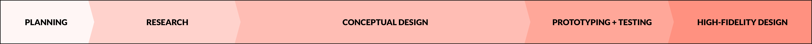

Google Design Exercise
2019. 3 days.
Design Exercise.
Prompt:
A new school year is approaching and the orientation team is looking to you for some design expertise.
Chosen Option:
Option 1 - Design an experience for new students to browse, search, and propose new student organizations. Provide your overall process, a wireframe flow, and one to two screens at higher fidelity.
Contents:
- 1. Overall Process
- 2. Research
- 3. Conceptual Design
- 4. Prototyping + Testing
- 5. High-fidelity Design

Overall Process:

This is the general structure of the design process that I've implemented through projects at school and work experiences. However, as expected due to time restrictions each step lacked depth and had less development through iterations.
Research:
I focused my research on enrolled college students to learn how they've interacted with student organizations so far. The goal was to understand the current limitations present with how students discovered and became involved with activities and social circles at college.
My method of research was interviewing shaped through fixed questions to lead a free-flowing conversation.
Fixed Questions:
Describe your involvement with student organizations at college
this semester?
How did you learn about the organizations?
What are some mediums/methods that you use to learn about new organizations or stay connected with happenings?
What would help you become more involved with student organizations?
Would you want to create your own student organization?
Why? or Why not?
These are the 3 people I interviewed: